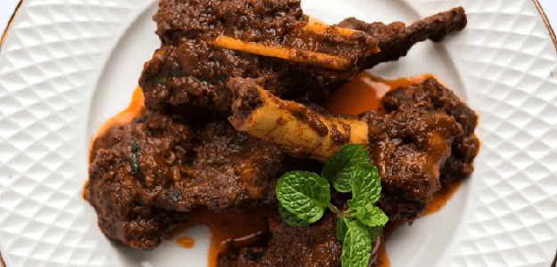

Kerala Chilli Mutton

Description
This chilli mutton is made with numerous desi spices like turmeric, cumin powder, black pepper, garam masala and more. Unlike other chilli mutton recipes,
this chilli mutton recipe does not involve sauces like soy, chilli and more.
Ingredients
- 6-7 Mutton pieces
- 1/4 tsp Chilli powder
- 1/4 tsp Coriander Powder
- 1 tsp Lemon Juice
- 5 Garlic cloves
- 3-5 Green Chillies
- Salt as per taste
- 1 medium Onion
- 3 Tomato
- 2 Green Chillies, Slit
- 4-5 Curry Leaves
- 1/4 tsp Garam Masala powder
- 1/4 tsp Pepper powder
- Oil
Steps
- Add some coconut oil, chopped green chillies, ginger-garlic paste, lemon juice, and mutton pieces in a cooker. Mix it well.
- Once the mutton is cooked, take it off the heat; add some more oil in the same cooker.
- Next, throw in chopped onions and spices like red chilli powder, pepper, coriander powder, salt as per taste, curry leaves and garam masala.
- Combine and then add tomato puree. Let it cook for a while.
- Next, add the cooked mutton and let it cook.
- Once done, garnish with fresh coriander leaves and serve!